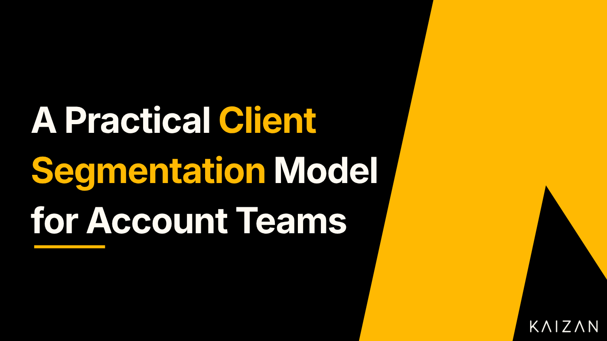

Client Segmentation: Models and How to Segment Clients

Most client services teams treat every account the same way until something forces them not to. A big client threatens to leave, a small one quietly eats a month of the team's time, and suddenly the question is unavoidable: which clients actually deserve which level of attention?
Client segmentation is how you answer that question deliberately rather than in a panic. Done well, it tells you where to put your best people, which relationships to protect, and where growth is hiding in plain sight. Done badly, or not at all, it leaves your team spread evenly across accounts that are anything but equal.
This guide covers what client segmentation is, the models worth knowing, a step by step method you can run this quarter, and the mistakes that quietly undermine most attempts.
What is client segmentation?
Client segmentation is the practice of grouping your clients into distinct segments based on shared characteristics, so you can serve each group with the right level of attention, the right service model, and the right commercial focus. The characteristics might be revenue, growth potential, lifecycle stage, health, or the way a client prefers to work with you.
The point is not to rank clients from best to worst. It is to recognise that a client worth 200,000 a year and a client worth 5,000 a year have different needs, different risks, and different economics, and that treating them identically wastes effort on one and starves the other.
Good segmentation gives you three things: a clear service model for each group, a defensible way to allocate your team's time, and an early view of where retention risk and expansion opportunity actually sit.
Why client segmentation matters for client services teams
For account managers, client success teams, and agencies, segmentation is really a resourcing decision dressed up as an analysis. Your team's hours are finite. Every hour spent over servicing a small account is an hour not spent protecting a strategic one.
Segmentation also changes the commercial conversation. When you can see that a handful of clients drive most of your revenue, and that a second group has high potential but low current spend, you stop managing a flat list of accounts and start managing a portfolio. That shift is where net revenue retention comes from: protecting the base, and expanding the accounts with room to grow.
It matters for the client experience too. A well segmented book means the clients who need a hands on, senior relationship get one, and the clients who prefer a lighter, more self directed touch are not smothered with meetings they never asked for.
The main client segmentation models
There is no single correct model. The right one depends on what decision you are trying to make. These are the models worth knowing, and when each one earns its place.
1. Value or tier based segmentation
The most common starting point. You rank clients by revenue or fees and group them into tiers, often something like strategic, key, and growth accounts, plus a long tail of smaller clients.
Best for: allocating senior time and setting service levels. It is simple, it is defensible to leadership, and everyone understands it.
Watch out for: it only looks backward. A client can be small today and enormous tomorrow, and pure value tiering will miss them.
2. Value versus potential segmentation
A two by two that plots current value against future potential. You end up with four groups: high value and high potential (protect and grow), high value and low potential (protect and hold), low value and high potential (invest), and low value and low potential (serve efficiently).
Best for: deciding where to invest for expansion rather than just where to defend. This is usually the model that changes behaviour, because it surfaces the low spend, high potential clients that flat revenue tiering ignores.
Watch out for: potential is a judgement, so it needs real evidence behind it, not optimism.
3. Lifecycle stage segmentation
Groups clients by where they are in the relationship: onboarding, adoption, established, renewal, at risk. Each stage needs a different play.
Best for: designing the client journey and knowing which motion to run at any given moment.
4. Health or risk based segmentation
Groups clients by relationship health, usually a blend of signals like engagement, sentiment, usage, and open issues. Segments might be healthy, watch, and at risk.
Best for: retention. It tells your team where to intervene before a renewal conversation goes wrong.
Watch out for: it is only as good as the signals feeding it. Health scores built on a single data point, or on gut feel, tend to mislead.
5. Needs or behaviour based segmentation
Groups clients by what they actually want from you: strategic partnership, execution, speed, cost, and so on. Two clients of identical size can sit in completely different segments here.
Best for: tailoring how you show up, and matching the right people to the right relationships.
Most mature teams do not pick one model. They lead with value or potential to set the service tier, then layer health on top to manage risk within each tier.
How to segment clients: a step by step method
You can run a first pass on this in an afternoon. Making it stick takes a little longer.
Decide what the segmentation is for. Resourcing, retention, and expansion pull the model in different directions. Name the decision before you touch the data, because it determines which variables matter.
Choose your dimensions. Keep it to two or three. Revenue and growth potential is a strong default. Adding health as a third layer works well. More than three and the segments stop being usable.
Gather the data. This is where most segmentation efforts stall. Revenue is easy. Potential, health, and behaviour live in the relationship itself: in the calls, the emails, the tone of the last three conversations, the questions a client keeps asking. Pulling that together by hand across a full book of accounts is slow, and it goes stale the moment you finish.
Build the segments. Aim for three to five. Fewer and the groups are too blunt to act on. More and you cannot hold a distinct service model in your head for each one. Give each segment a plain name your whole team will actually use.
Assign a service model to each segment. This is the step that turns analysis into action. For each segment, decide the cadence of contact, the seniority of the owner, the review rhythm, and the commercial goal. Segmentation with no differentiated service model behind it is just a spreadsheet.
Review on a cadence. Clients move. A client can climb from long tail to strategic in two quarters, or slide from healthy to at risk in two weeks. Re-segment quarterly at least, and let health signals move a client between segments in close to real time.
The role of client intelligence in segmentation
The hard part of segmentation is rarely the model. It is keeping the inputs accurate and current across an entire book of clients.
Revenue numbers are simple to pull. The signals that actually predict retention and expansion, engagement, sentiment, the strength of a relationship, the risks surfacing in conversations, are buried in the day to day interactions your team is already having. That is exactly the data that goes uncaptured, or gets written down in someone's notes and never seen again.
This is where a client intelligence platform changes the exercise. When the health and engagement signals from every client conversation are captured and structured automatically, segmentation stops being a quarterly manual project and becomes a live view of your book. Clients move between segments as the relationship actually changes, not months later when someone gets round to updating the spreadsheet. Kaizan is built for exactly this: turning the interactions across your client relationships into the intelligence that tells you which accounts to protect, which to grow, and which are quietly at risk.
Common client segmentation mistakes
- Segmenting on revenue alone. The single most common error. It over serves large but stagnant accounts and misses small accounts with real growth in them.
- Too many segments. If your team cannot recall the service model for each segment without looking it up, you have too many.
- No service model behind the segments. A segmentation that does not change how you actually work with each group is decoration. The whole value is in the differentiated action.
- Setting it and forgetting it. A segmentation built once and left untouched is wrong within a quarter. Client books move constantly.
- Relying on gut feel for the soft variables. Potential and health are judgements, but they should be judgements backed by evidence from the relationship, not by whoever spoke loudest in the account review.
Getting started
If you have never formally segmented your clients, start simple. Plot your accounts on current value against growth potential, group them into four, and give each group a clear service model. That alone will tell you where your team's time is going versus where it should go.
The step that separates a segmentation that sticks from one that gathers dust is the data. The moment your segments depend on signals you can only gather by hand, they start to decay. Ground them in the intelligence already flowing through your client relationships, and segmentation becomes something your team lives by rather than a slide they revisit once a year.